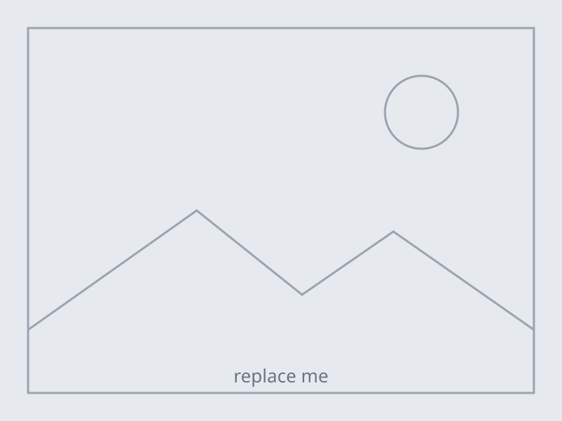

A worked example
The section skeleton
This page is the structure your piece is built from, with its own structure as the subject. Every section below explains what that kind of section is for. Replace the words; keep the shape.
Interaction Design · Level 5 · Leeds Beckett University
One section, one idea
A scrolling narrative is a stack of sections read in one order, each doing one job. The test is a single sentence: this section exists so the reader understands, feels or notices something. If you need the word “and”, it is two sections.
Notice what this one has: a section element, a real heading, an
aria-labelledby pointing at that heading, and an id that starts with
a number. The number gives you reading order at a glance. The words tell you which one it is.

alt text for what the picture shows,
not for the fact that there is a picture.
Down has to mean something
Add chapter--reverse and the picture moves to the other side. Alternating gives a
long page a rhythm without any JavaScript at all, and it is the cheapest pacing tool you have.
More importantly: if a reader could shuffle these sections into a different order and lose nothing, the scroll is decoration. Every section should earn its position.
Some sections are just words
A piece where every section has a full-bleed image and a transition is exhausting by the fourth screen. Text-only sections are where the reader catches up, and they make the next visual land harder.
A rough shape that works: long, short, short, long. All-long reads like homework.
A scene holds still while you scroll
The figure behind this text is pinned by position: sticky in the CSS. No script is
involved, which is why this scene still works with JavaScript switched off.
What you add in Week 7 is not the pinning. It is knowing which step the reader has reached, so the figure can change as each one arrives.
data-step carries the number in the markup rather than counting it in code, so
you can reorder steps without renumbering anything. You will reorder them.
Give a scene roughly one screen height of scroll per step. Four steps is four screens. That is longer than it feels on a storyboard.
Where the evidence goes
Sections that carry a claim need the source visible somewhere the reader can find it — in the figure caption, inline, or in the credits at the foot. Every claim in your finished piece needs a source you could show a marker.
The moment the reader acts
Somewhere in your piece the reader stops being an audience. A before-and-after they drag, a choice of which thread to follow, a map they find their own street on. The test is that their action changes what they see, and that a different reader could do it differently.
Mark it now, build it in Week 9. Component 1 asks you to have designed it, not to have made it work.
What it means
After the interaction, say what it showed. Readers who dragged the slider know; readers who scrolled past need telling. Never let the only route to a point run through an optional action.
A second scene, later, shorter
Two or three scenes in a whole piece. Six is a piece that has stopped moving.
Make the second one shorter than the first. Repetition at the same length reads as a formula.
Contrast is what makes a scene feel like an event.
The turn
Most pieces have a section near the end where the subject stops being a thing that happened and becomes a thing that matters. It is usually quiet, usually short, and usually the part readers quote back at you.
The close
Land it. Do not summarise what the reader has just read; give them the one thing to carry out of the page. Then stop — a scrolling piece that will not end is the commonest fault in the genre.